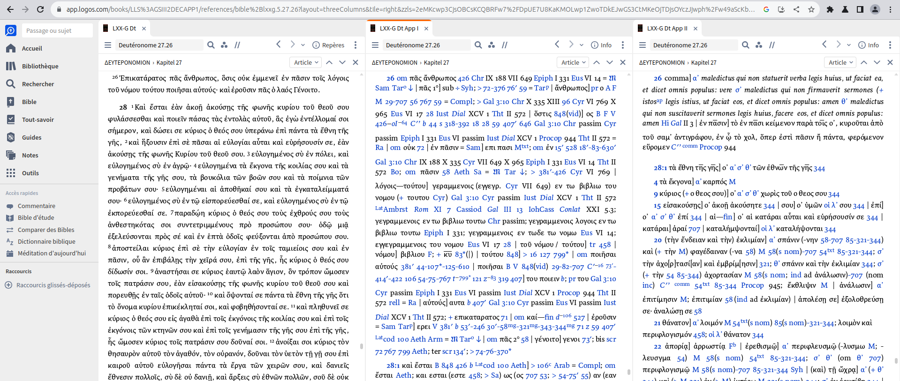
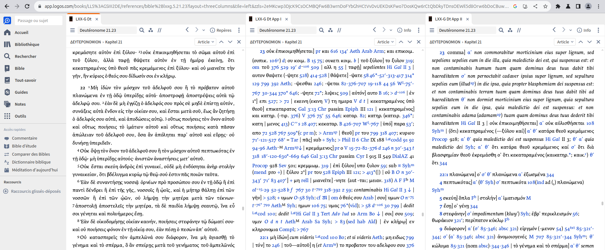
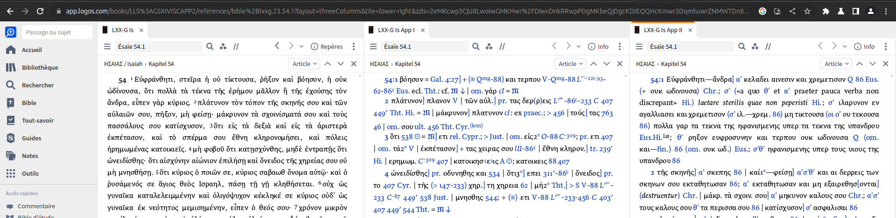

Commentaire sur: Épître aux hébreux (ch. 7-10), Épître aux Corinthiens (1) (ch. 7), Épître aux Galates, Épître aux romains, Épître aux colossiens, Actes des Apotres (ch. 15 et 21), Philippiens (ch. 3).
Preambule :
TODO: Donner la preface en anglais du livre de Gottingen pour notamment avoir des informations sur le texte de base et pour avoir la signification des symboles de l'apparat critique.
L'épître contient au total 3 citations de "l'Ecriture" :
Ga 3:10 : "Ἐπικατάρατος πᾶς ὃς οὐκ ἐμμένει ἐν πᾶσιν τοῖς γεγραμμένοις ἐν τῷ βιβλίῳ τοῦ νόμου, τοῦ ποιῆσαι αὐτά", (f35, R.P).
Les seules passages de la bible massoretique que j'ai trouves qui se rapprochent le plus d'une telle parole sont Dt 27:26 et Dt 28:15.
Voici ce que nous avons chez Gottingen pour Dt 27:26 :

Pour voir ce que nous avons chez Gottingen en Dt 28.15, vous pouvez cliquer ici.
Ga 3:13 : "Ἐπικατάρατος πᾶς ὁ κρεμάμενος ἐπὶ ξύλου", (f35, R.P).
Je n'ai pas trouve d'autre passage de la bible massoretique que Dt 21:23 plus proche d'une telle parole.
Voici ce que nous avons chez Gottingen pour Dt 21:23 :

Ga 4:27 : "Εὐφράνθητι, στεῖρα, ἡ οὐ τίκτουσα· ῥῆξον καὶ βόησον, ἡ οὐκ ὠδίνουσα· ὅτι πολλὰ τὰ τέκνα τῆς ἐρήμου μᾶλλον ἢ τῆς ἐχούσης τὸν ἄνδρα", (f35, R.P).
En faisant abstraction de la ponctuation, nous pouvons parfaitement retrouver cette citation de l'Ecriture dans la LXX en Esaie 54:1 :

Nous pouvons remarquer que le texte de base de Gottingen est, sans compter la ponctuation, le meme que celui en Ga 4:27.
TODO: Il serait interessant de savoir neanmoins si ce texte est construit en melange de plusieurs autres, ou s'il n'est que transcription d'un manuscrit.
TODO: Donner un exemple de manuscrit de la LXX ayant ce Esaie 54:1, et quel serait le plus ancien que nous ayons?
En supossant que le texte de base de Gottingen pour Esaie 54:1 soit transcription d'un seul manuscrit et non melange de plusieurs manuscrits, les apparats critiques affiches sur l'image a la droite du texte de base ne sont naturellement pas utiles pour avoir connaissance d'un bon manuscrit de Esaie 54:1 dans la LXX ; mais ces apparats ont etes donnes afin d'avoir une vue globale de l'etat de Esaie 54:1 dans la LXX.
Voici les changements exhaustifs de ponctuation entre le texte Ga 4:27 et la LXX : Esaie 54:1 a des virgules a la place des ·, et n'a pas la virgule juste apres στεῖρα.
Dire (et montrer avec des captures d'ecrans) si on a trouve ce passage de Galates dans un autre livre (ex: livre des Jubiles) ou dans un autre passage biblique ?
Traduction :
Sois-réjouie, stérile, celle n'enfantante pas : fracasse et beugle,
celle ne ressentante pas la douleur de l'accouchement : en ce que nombreux les enfants de la désertée [ayant] davantage [d'enfant] que de celle ayante l'homme.
texte massoretique ? DDS ?
Esaïe 54:1 massoretique traduction littérale (Chouraqui) : "Jubile, stérile, toi qui n’as pas enfanté !
Éclate de jubilation, hennis, toi qui n’as pas eu de spasme !
Oui, les fils de la désolée sont plus nombreux
que les fils de la mariée, dit IHVH-Adonaï."
{kind=link}